安装好Charles以后，做如下配置。
抓取mac上HTTP请求
在菜单栏勾选『Proxy -> macOS Proxy』，macOS系统HTTP/HTTPS代理将会被自动设置为本地代理，默认端口8888。
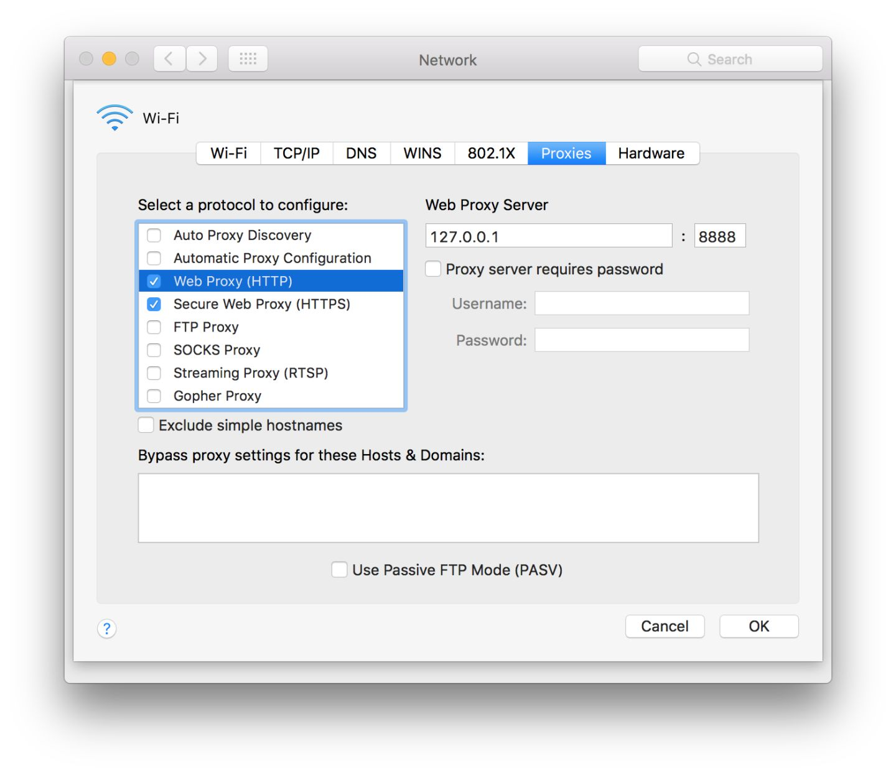
访问HTTP数据链接，可以开始抓取HTTP包。
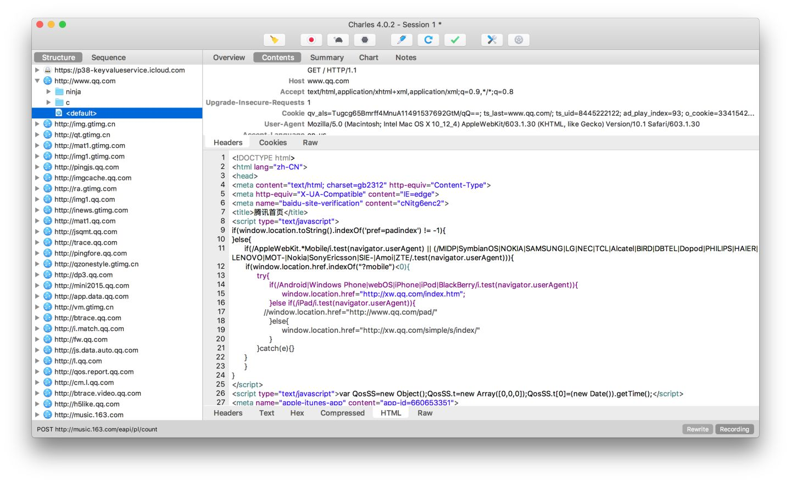
抓取mac上HTTPS请求
在菜单栏选择 『Help -> SSL Proxying -> Install Charles Root Certificate』，会自动导入 Charles Proxy CA 证书并打开 Keychain Access，双击新导入的证书弹出证书信息页面，将 Secure Sockets Layer(SSL) 设置为Always Trust，关闭页面后弹出密码提示，输入密码更新系统信任设置。
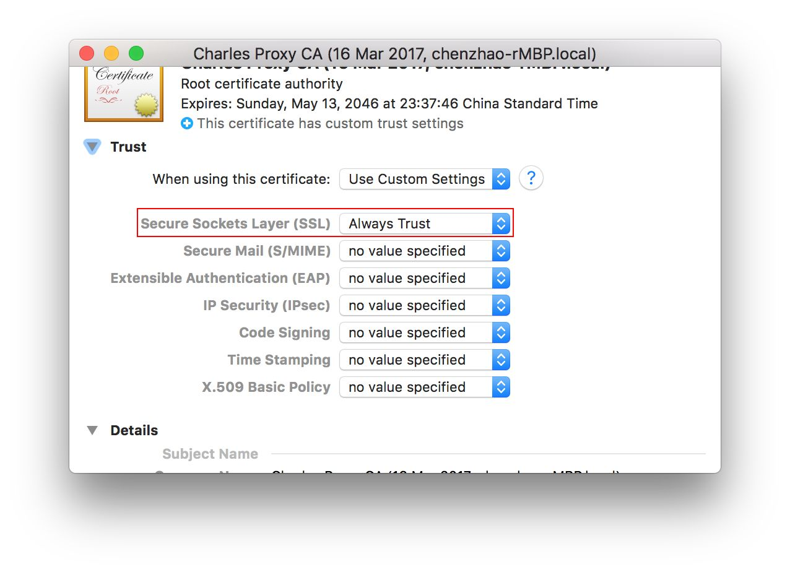
在菜单栏选择 『Proxy -> SSL Proxy Settings…』，在SSL Proxying选项卡中可以添加需要抓包的域名端口。
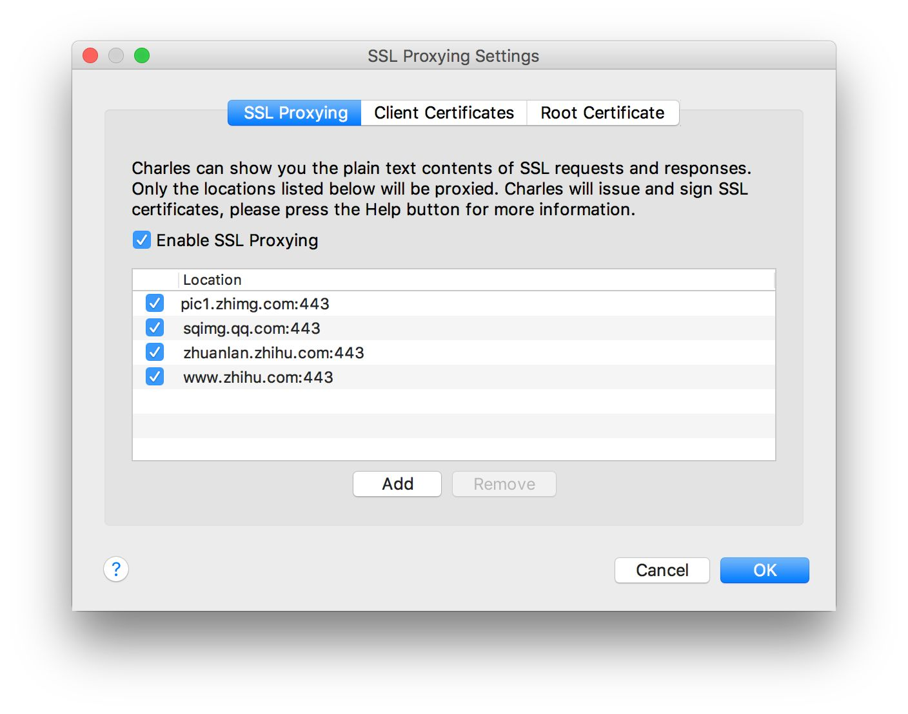
或者直接在『Structure』列表中右击需要抓HTTPS包的地址，选择 Enable SSL Proxying，也可以添加到上述列表中。
访问HTTPS数据链接，可以开始抓取HTTPS包。
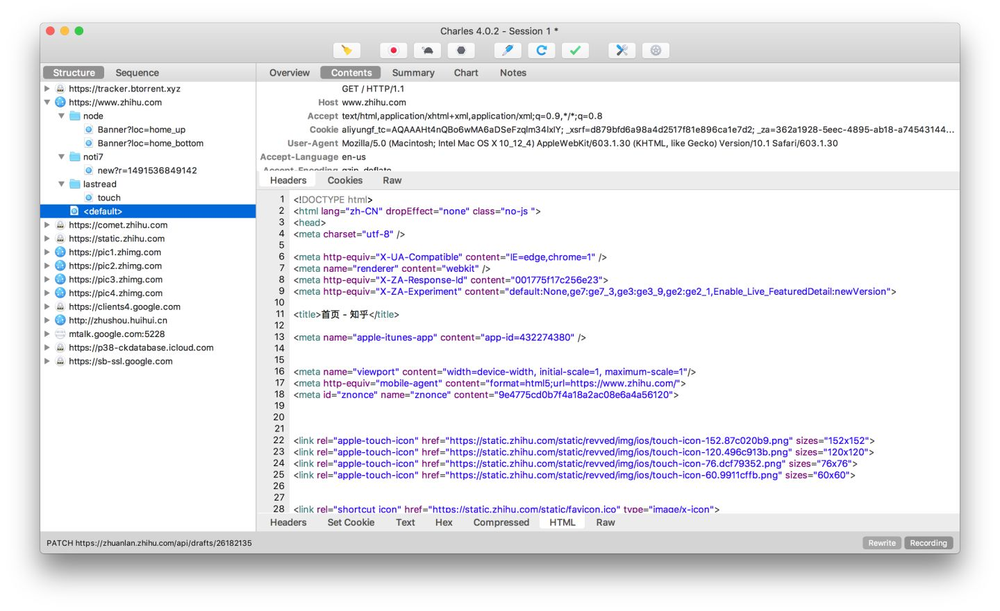
抓取iOS上HTTP请求
在Mac上先打开Charles，确保iOS设备和Mac处于同一局域网内（可使用Mac创建热点分享给iOS设备）。
设置iOS HTTP代理，打开iOS设备对应WIFI设置，添加代理IP地址（Mac的局域网地址）和端口号（8888）。
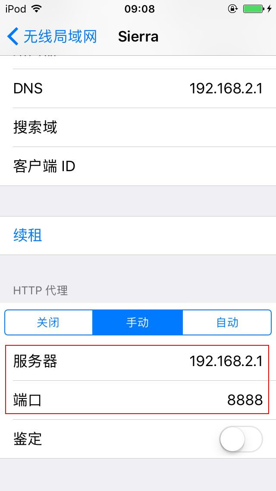
Mac局域网地址可以在Charles中从菜单栏『Help -> Local IP Address』获取。
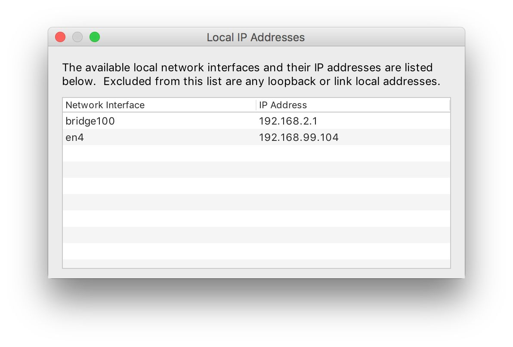
在iOS设备上访问数据链接，Charles 弹出 Access Control 确认对话框，选择Allow，可以开始抓取HTTP包。
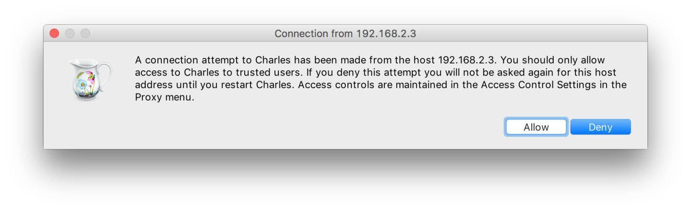
抓取iOS上HTTPS请求
在菜单栏选择 『Help -> SSL Proxying -> Install Charles Root Certificate on a Mobile Device or a Remote Browser』，弹出提示框。
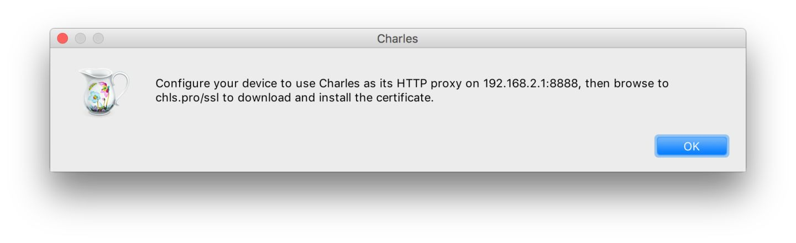
根据上述提示，在iOS设备上使用Safari浏览器访问 http://chls.pro/ssl，Safari浏览器会自动下载证书并提示安装，根据提示一步一步安装好，证书会被添加到『设置 -> 通用 -> 描述文件』中。
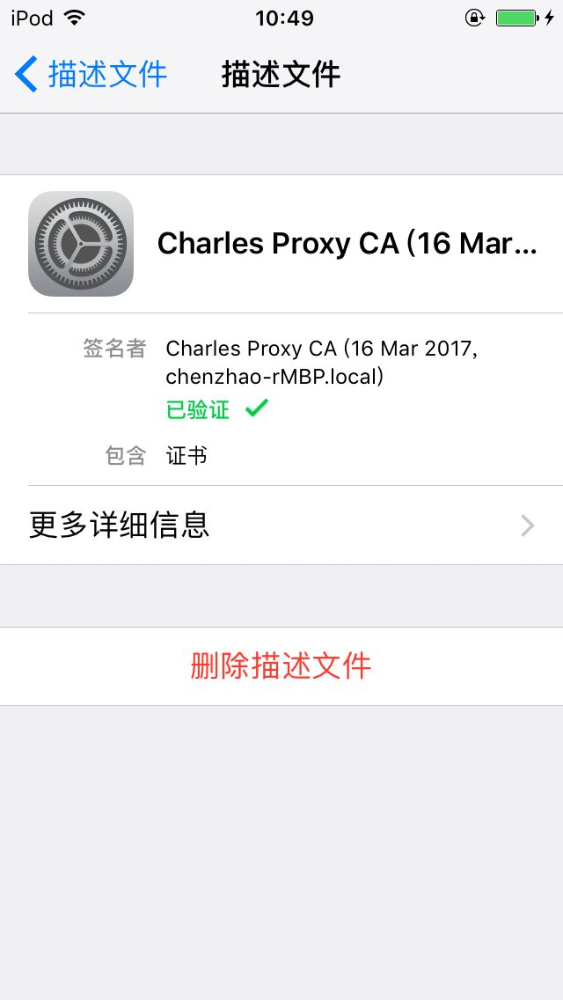
进入『设置 -> 通用 -> 关于本机 -> 证书信任设置』，对上一步安装的Charles证书启用完全信任。
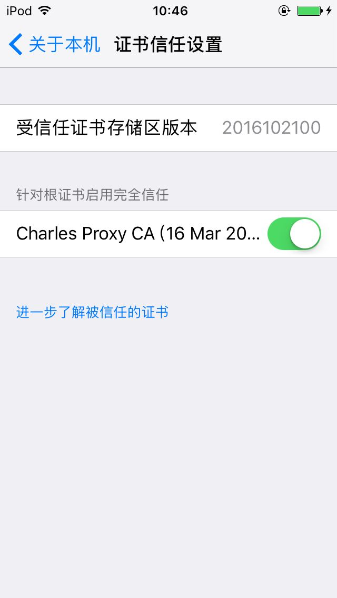
在iOS设备上访问HTTPS数据链接，可以开始抓取HTTPS包。抓包域名端口设置和macOS应用程序相同。
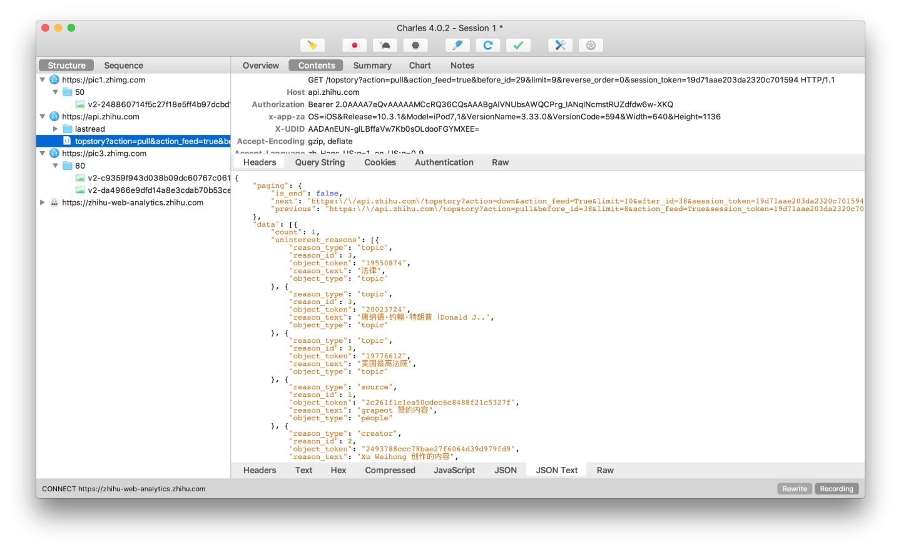